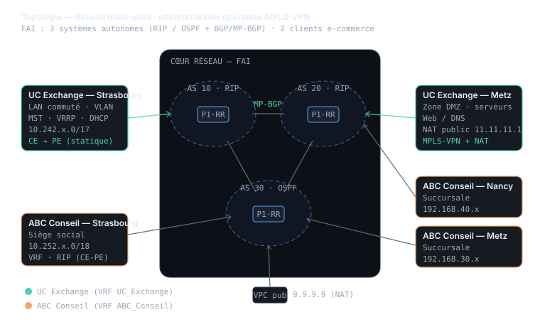
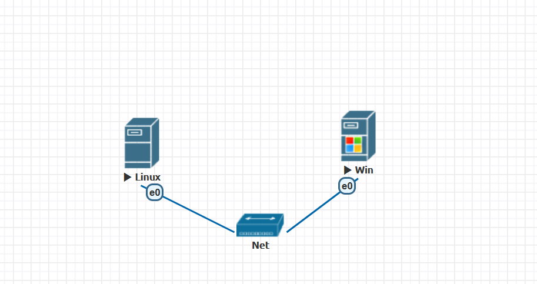
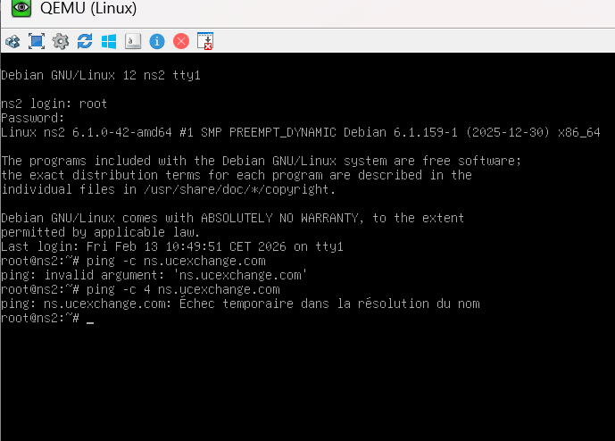

01 Contexte
Pourquoi
Deux entreprises présentes sur trois villes ont besoin d'une connectivité inter-sites fiable, fournie par un opérateur.
Qui
SAÉ en groupe de 3 (interconnexion opérateur) ; SAÉ de transmission menée en parallèle (prise intelligente).
Quoi
Un cœur de réseau FAI sur 3 AS offrant du MPLS-VPN, et une chaîne de transmission jusqu'à l'usager.
Où
Maquette EVE-NG répartie sur plusieurs machines, à l'IUT de Colmar.
Quand
Semestre 3 — volet « réseau opérateur » de la SAÉ multi-sites, et SAÉ 3.01.
Comment
BGP/MP-BGP avec Route-Reflectors, VRF par client, RIP/OSPF dans les AS, filtrage de routes et NAT statique.
02 Actions, traces & preuves
Le volet opérateur consiste à transformer un ensemble de routeurs en un véritable fournisseur d'accès capable de transporter le trafic privé de deux clients de manière étanche :
- Mise en place du routage interne à chaque système autonome : RIP pour les AS 10 et 20, OSPF pour l'AS 30, avec connectivité totale validée par ping sur les loopbacks.
- Sessions BGP / MP-BGP montées en peer-group et en Route-Reflector (le routeur P1 jouant le rôle de RR) pour éviter le maillage complet et transporter les préfixes IPv4 et VPNv4.
- Création des VRF par client (UC Exchange, ABC Conseil) avec leurs RD/RT, raccordement des CE en routage statique ou RIP selon le client.
- Filtrage de routes pour cloisonner les clients : seuls les préfixes clients circulent, et certaines politiques imposent qu'un flux transite par un AS précis ou que l'accès ne parte que du siège.
- Exposition d'un serveur web au public via une translation NAT dédiée, en parallèle de l'accès MPLS-VPN.
En complément, la SAÉ « Prise Wifi intelligente » (mise en œuvre d'un système de transmission, notée 18/20) m'a fait travailler le raccordement de l'usager final — la dernière brique entre l'infrastructure et l'objet connecté.
Tests de redondance
Coupure d'interface ASBR et vérification que le ping inter-sites continue de passer — preuve de la tolérance aux pannes.
Traceroute de politique
Vérification qu'un flux UC Exchange Strasbourg→Metz transite bien par l'AS 20, conformément au filtrage BGP appliqué.
Étanchéité inter-clients
Validation que deux sites d'un client ne peuvent pas joindre ceux d'un autre — cloisonnement VPN confirmé.

Captures réelles du labo


03 SAÉ rattachées
Interconnexion opérateur MPLS-VPN
S3 · groupe de 3Cœur de réseau FAI sur 3 AS, offre MPLS-VPN pour deux clients multi-sites, haute disponibilité et politiques de routage.
Prise Wifi intelligente
SAÉ 3.01 · 18/20Mise en œuvre d'un système de transmission jusqu'à l'usager — du raccordement à l'objet connecté.
04 Lien avec le référentiel
Composantes essentielles mises en œuvre — réseau opérateur & transmission
Réflexivité
Quelle difficulté ai-je rencontrée ?
Le MPLS-VPN empile beaucoup de couches (IGP, BGP, MP-BGP, VRF) et une erreur à un étage casse tout sans dire lequel. Au début, je ne savais pas par où commencer pour diagnostiquer quand un client ne joignait pas son autre site.
Comment l'ai-je dépassée ?
J'ai appris à dérouler le diagnostic dans l'ordre des couches : d'abord la connectivité IGP interne à l'AS, puis les sessions BGP, puis les routes VPNv4, puis les VRF. En vérifiant « est-ce que cet étage fonctionne avant de regarder le suivant ? », j'isolais la panne au lieu de tout reprendre.
Qu'ai-je proposé ou décidé ?
Plutôt qu'un maillage BGP complet, j'ai utilisé la logique Route-Reflector et les peer-groups pour garder une configuration lisible et extensible. Et pour répondre aux politiques clients, j'ai mis en place un filtrage de routes qui force certains flux à passer par un AS donné.
En quoi est-ce généralisable ?
Raisonner « par couches » pour diagnostiquer, et concevoir une configuration qui reste maintenable quand le réseau grandit, sont des principes valables bien au-delà du MPLS. C'est la même rigueur qui sert à isoler une panne sur n'importe quel système distribué.